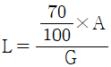
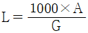
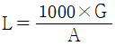
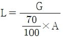

대기환경산업기사 (2006-09-10 기출문제)
1과목: 대기오염개론
1. 대기오염물질인 Mn, Zn 및 그 화합물이 인체에 미치는 영향으로 가장 일반적인 것은?
- 기형
- 비중격천공
- 발열
- 감암
(정답률: 알수없음)

2. 대기오염사건 중 LA스모그(Smog)사건에 대한 설명이 아닌 것은?
- 발생기온: 25-30℃
- 발생시간: 이른 아침
- 오염원: 석유계 연료
- 역전종류: 침강형 역전
(정답률: 알수없음)
3. 바람장미(Wind Rose)에 기록되는 내용과 가장 거리가 먼 것은?
- 풍향
- 풍속
- 풍압
- 무풍률
(정답률: 알수없음)
4. 표준상태에서 1m3의 공기 중에 오존량이 10mg 검출되었다. 이 때 오존의 농도는 몇 ppm인가?
- 4.7ppm
- 5.3ppm
- 7.1ppm
- 13.4ppm
(정답률: 알수없음)
5. 지구에서 복사에 관련된 법칙 중 '최대에너지 파장과 흑체표면의 절대온도는 반비례함'을 나타내는 법칙은?
- 스테판-볼츠만의 법칙
- 플랑크 법칙
- 비인의 변위법칙
- 알베도 법칙
(정답률: 알수없음)
6. 유효 굴뚝높이가 50m이다. 동일한 기상조건에서 최대지표농도를 1/4로 감소시키기 위해서는 유효 굴뚝높이를 얼마만큼 더 증가시켜야 하는가? (단, 중심축 기준)
- 25m
- 50m
- 75m
- 100m
(정답률: 알수없음)
7. 지상 10m에서의 풍속이 8m/sec이라면 지상 60m에서의 풍속은? (단, P= 0.12 Deacon식을 적용)
- 약 8.0m/sec
- 약 9.9m/sec
- 약 12.5m/sec
- 약 14.8m/sec
(정답률: 알수없음)
8. 비스코스 섬유제조시 주로 발생하는 무색의 유독한 휘발성액체이고, 그 불순물은 불쾌한 남새를 나타내는 대기오염물질은?
- 포름알데히드(HCHO)
- 이황화탄소(CS2)
- 암모니아(NH3)
- 일산화탄소(CO)
(정답률: 알수없음)
9. 악취(냄새)의 물리적, 화학적 특성에 관한 설명으로 틀린 것은?
- 예외는 있으나 일반적으로 증기압이 높을수록 냄새는 더 강하다
- 악취유발물질은 Paraffin과 CS2를 제외하고는 일반적으로 적외선을 강하게 흡수한다.
- 악취유발가스는 통상 활성탄과 같은 표면흡착제에 잘 흡수된다.
- 악취는 물리적 차이보다는 화학적 구성에 의해서 결정된다는 주장이 더 지배적이다.
(정답률: 알수없음)
10. 시골지역의 분진에 의한 빛 흡수율을 조사하기 위하여 직경 120mm인 여과지에 500L/분의 속도로 10시간 동안 포집하여 빛 전달율을 측정하니 60%였다. 1000m당 Coh는?
- 0.84
- 1.42
- 2.43
- 3.68
(정답률: 알수없음)
11. 다이옥신의 대표적인 물리적인 성질을 알맞게 나타낸 것은?
- 열적불안정. 높은 증기압. 높은 수용성
- 열적안정. 낮은 증기압. 높은 수용성
- 열적불안정. 높은 증기압. 낮은 수용성
- 열적안정. 낮은 증기압. 낮은 수용성
(정답률: 알수없음)
12. 어느 굴뚝의 높이가 50m, 굴뚝내의 평균 배출가스 온도가 220℃, 대기온도가 25℃라 할 때, 이 굴뚝의 자연통풍력은 얼마인가? (단, 굴뚝 속에서의 마찰손실이나 압력손실 등에 대한 손실은 없는 것으로 한다. 표준상태에서의 대기와 가스의 비중량은 1.3kg/Sm3 으로 같다고 가정한다.)
- 약 24mmH2O
- 약 35mmH2O
- 약 47mmH2O
- 약 51mmH2O
(정답률: 알수없음)
13. 파장 5320Å인 빛 속에서 밀도가 1.32g/cm3이고, 직경 0.2㎛인 기름방울의 분산면적비가 3일 때의 분진농도가 0.4mg/m3이라면 가시거리는 몇 m인가? (단, V= {(5.2×ρ×r)/(K×C)}식 적용)
- 572m
- 685m
- 780m
- 830m
(정답률: 알수없음)
14. 다음 중 2차 대기오염물질과 가장 거리가 먼 것은?
- H2O2
- NaCl
- SO2
- SO3
(정답률: 알수없음)
15. 상대습도가 70%일 때 가시거리 계산식으로 맞는 것은? (단, L: 가시거리(km), G: 부유분진농도(㎍/m3), A: 상수)




(정답률: 알수없음)
16. 프로판가스(C3H8) 100kg을 액화시켜 만든 연료가 완전기화 될 때 그 용적은? (단, 표준상태 기준)
- 25.4 Sm3
- 50.9 Sm3
- 75.2 Sm3
- 102.1 Sm3
(정답률: 알수없음)
17. 상온 25℃에서 가스의 체적이 400m3 이었다. 이 때 기온이 35℃로 상승하였다면 가스의 체적은 얼마로 되는가?
- 408.2 m3
- 410.6 m3
- 431.4 m3
- 422.8 m3
(정답률: 60%)
18. 굴뚝에서 배출된 연기형태 중 대기가 불안정하여 난류가 심할 때 발생하고, 오염물질의 연직 확산이 커서 굴뚝부근의 지표면에서는 국지적, 일시적인 고농도현성이 발생되기도 하며, 일반적으로 지표면이 가열되고 바람이 약한 맑은 날 낮에 주로 일어나는 형태는?
- 훈증형
- 지붕형
- 원추형
- 환상형
(정답률: 알수없음)
19. 다음 중 탄화수소(HC)가 가장 많이 배출될 수 있는 자동차 운행 조건은? (단, 가솔린 자동차 기준)
- 감속
- 가속
- 정속
- 공회전
(정답률: 알수없음)
20. 오존(O3)에 관한 설명으로 알맞지 않은 것은?
- 오염지역에서 대기 중 오존농도의 일변화는 매우 크며 새벽에 가장 높은 농도로 나타낸다.
- 온실가스로 작용한다.
- 오염된 대기 중의 오존은 LA스모그 사건에서 확인되었다.
- 대기 중에서 오존의 배경농도는 0.01-0.02ppm 정도로 알려져 있다.
(정답률: 알수없음)
2과목: 대기오염 공정시험 기준(방법)
21. 다음의 분석가스별 시험방법 중 종말점의 색깔이 틀린 것은? (단, 배출허용기준 시험방법 기준)
- 암모니아 - 중화적정법 - 적자색
- 염화수소 - 질산은적정법 - 엷은적색
- 황산화물 - 아르세나조III - 청색
- 황화수소 - 용량법 - 적색
(정답률: 알수없음)
22. 굴뚝에서 배출되는 염소가스를 오르토 톨리딘 법으로 정량시 (흡광도 측정시) 반응온도는?
- 약 20℃
- 약 30℃
- 약 40℃
- 약 60℃
(정답률: 알수없음)
23. 굴뚝배출가스의 유속을 구하기 위하여 피토우관으로 측정했을 때의 유속이 14.5m/sec였다. 이 때의 동압은 얼마인가? (단, 피토우관 계수는 1, 습식배기가스의 단위체적당 질량은 1.2kg/m3 으로 한다.)
- 12.8 mmH2O
- 10.6 mmH2O
- 8.8 mmH2O
- 6.2 mmH2O
(정답률: 알수없음)
24. 굴뚝의 직경이 1.5m인 원형굴뚝의 측정점수는?
- 4
- 8
- 12
- 16
(정답률: 알수없음)
25. 가스크로마토그래프법에서 분리관 내경이 4mm일 경우 사용되는 흡착제 및 담체의 입경범위로 맞는 것은? (단, 기체-고체 가스크로마토그래프법)
- 110-125㎛
- 149-177㎛
- 177-250㎛
- 280-350㎛
(정답률: 알수없음)
26. 공사장에서 발생되는 비산먼지를 고용량 공기포집기를 이용하여 측정하고자 한다. 이 때 측정을 위한 대조지점이 1개소 일 때 원칙적으로 농도가 가장 높을 것으로 예상되는 측정지점 몇 개소 이상을 선정하여야 하는가?
- 1
- 2
- 3
- 4
(정답률: 알수없음)
27. 가스크로마토그래프법에 의한 분석결과가 다음과 같을 경우, 이 성분에 관하여 1 이론단에 해당하는 분리관의 길이(HETP)? (단, 분리관 길이 2m, 이론단수 1600, 보유시간 20분, 피이크의 좌우 변곡점에서 접선이 자르는 바탕선의 길이 10mm, 기록지의 이동속도는 5mm/min이다.)
- 1.00mm
- 1.25mm
- 1.50mm
- 1.75mm
(정답률: 알수없음)
28. 다음 내용 중 틀린 것은?
- 시험에 사용하는 시약은 따로 규정이 없는 한 특급 또는 1급 이상 또는 이와 동등한 규격의 것을 사용하여야 한다.
- “약”이란 그 무게 또는 부피에 대하여 ±5% 이상의 차가 있어서는 안된다.
- 시험에 사용하는 표준품은 원칙적으로 특급시약을 사용한다.
- 시험에 사용하는 물은 따로 규정이 없는 한 정제증류수 또는 이온교환수지로 정제한 탈염수를 사용한다.
(정답률: 알수없음)
29. 원자흡광광도 분석장치 중 광원부에 가장 일반적으로 쓰이는 램프는?
- 열음극선램프
- 중수소방전램프
- 텅스텐램프
- 중공음극램프
(정답률: 알수없음)
30. 이온크로마토그래프법에서 사용되는 검출기의 종류와 가장 거리가 먼것은?
- 전기 전도도 검출기
- 가시선 흡수 검출기
- 전기 화확적 검출기
- 적외선 흡수 검출기
(정답률: 알수없음)
31. [ 방울수라 함은 ( ① )℃에서 정제수 ( ② )방울을 떨어뜨릴 때 그 부피가 약 ( ③ )mL가 되는 것을 말한다. ] ( )안에 알맞은 내용은?
- ① 25, ② 10, ③ 1
- ① 25, ② 20, ③ 1
- ① 20, ② 10, ③ 1
- ① 20, ② 20, ③ 1
(정답률: 알수없음)
32. 환경대기중의 먼지농도를 연속자동측정하는 주 시험방법으로 적합한 것은?
- 적외선전해법
- 비분산적외선법
- 정전위전해법
- 베타선법
(정답률: 알수없음)
33. 폐기물소각로, 연소시설 등에서 배출되는 다이옥신류의 측정 및 분석에 사용되는 증류수를 세정할 때 사용하는 시약은?
- 노말헥산
- 디클로로메탄
- 톨루엔
- 아세톤
(정답률: 알수없음)
34. 굴뚝에서 배출되는 가스 중 일산화탄소를 분석하는 방법으로 틀린 것은?
- 비분산 적외선 분석법
- 정전위 전해법
- 질산은 적정법
- 가스크로마토그래프법
(정답률: 알수없음)
35. 굴뚝에서 배출되는 가스 중 염소가스를 채취하기 위한 흡수액은?
- 오르토 톨리딘 질산염용액
- 오르토 톨리딘 황산염용액
- 오르토 톨리딘 인산염용액
- 오르토 톨리딘 염산염용액
(정답률: 알수없음)
36. 배출가스 중 페놀류의 분석방법인 흡광광도법에 관한 설명 중 틀린것은?
- 흡수액으로 수산화나트륨 용액을 사용하낟.
- pH를 4±0.5로 조절한 후 4-아미노안티피린 용액과 페리시안산칼륨 용액을 가한다.
- 적색액을 510nm의 가시부에서의 흡광도를 측정하여 페놀류의 농도를 산출한다.
- 4-아미노안티피린법은 시료가스 채취량이 10L인 경우 페놀류의 농도가 1-20V/Vppm 범위의 분석에 적합하다.
(정답률: 알수없음)
37. 굴뚝에서 배출되는 다이옥신류를 분석할 때 원통형여과지를 사용하기로 하였다. 사용 전 조치사항으로 알맞은 것은?
- 550℃에서 2시간 작열시킨 후, 아세톤과 톨루엔으로 각각 30분간 초음파 세정을 한 다음 진공건조 시킨다.
- 550℃에서 4시간 작열시킨 후, 아세톤과 톨루엔으로 각각 30분간 초음파 세정을 한 다음 진공건조 시킨다.
- 850℃에서 2시간 작열시킨 후, 아세톤과 톨루엔으로 각각 30분간 초음파 세정을 한 다음 진공건조 시킨다.
- 850℃에서 4시간 작열시킨 후, 아세톤과 톨루엔으로 각각 30분간 초음파 세정을 한 다음 진공건조 시킨다.
(정답률: 알수없음)
38. 환경대기중의 아황산가스 농도를 측정함에 있어 파라로자닐린법을 사용할 경우 주요 방해물질로 알려진 물질이 아닌 것은?
- 크롬(Cr)
- 염화수소(HCl)
- 질소산화물(NOx)
- 오존(O3)
(정답률: 알수없음)
39. 배출가스 중의 시안화수소를 흡수액에 흡수시킨 다음 흡광도를 측정하여 정량하는 방법에 관한 설명으로 틀린 것은?
- 할로겐 등의 산화성 가스와 황화수소 등의 영향을 무시할 수 있는 경우에 적용된다.
- 흡수액은 과산화수소수(3%)용액을 사용한다.
- 피리딘-피라졸론 용액을 사용한다.
- 시료 채취량 100-1000mL인 경우 시안화수소의 농도가 0.5-100ppm인 것의 분석에 적합하다.
(정답률: 알수없음)
40. 오르자트 가스분석계로 보일러 배출가스 중의 산소농도를 측정할 때 사용되는 이산화탄소 흡수액은?
- 물 + 수산화칼륨
- 피로가롤 용액
- 포화식염수 + 황산
- 염화제일동용액
(정답률: 알수없음)
3과목: 대기오염방지기술
41. 굴뚝 배기량이 100m3/hr이고 HCl농도가 600ppm일 때 1m3의 물에 2시간 흡수시켰다. 이 때 수용액의 pH는? (단, 표준상태기준 HCl의 흡수율은 70%, 흡수된 HCl은 전량해리. HCl 이외의 영향은 없다.)
- 2.63
- 2.43
- 2.23
- 2.03
(정답률: 알수없음)
42. 액체연료 중 경유에 관한 설명으로 알맞지 않은 것은?
- 가솔린 보다 약간 무거운 증류성분으로 끓는점의 범위가 180-350℃로 등유와 중유의 중간에서 유출된다.
- 경유의 착화성을 나타내는 척도로는 옥탄가가 사용된다.
- 주로 자동차나 산업기계 등 소형 고속디젤기관용으로 사용된다.
- 디젤엔진에 사용되는 경유는 쉽게 자기착화가 되어야 한다.
(정답률: 알수없음)
43. 세정집진장치의 장점이라 볼 수 없는 것은?
- 입자상 물질과 가스의 동시제거가 가능하다.
- 연소성 및 폭발성 가스의 처리가 가능하다.
- 제진된 먼지의 재비산 염려가 없다.
- 친수성, 부착성 먼지에 의한 폐쇄염려가 없다.
(정답률: 알수없음)
44. 반지름 200mm, 유효높이 12m인 원통형 Filter bag을 사용하여 농도 6g/m3인 배출가스를 20m3/sec로 할 때 필요한 Filter bag의 수는?
- 111개
- 115개
- 121개
- 125개
(정답률: 알수없음)
45. 전기집진장치에서 집진효율이 90%이다. 이 때 집진판의 면적을 두 배로 하면 집진효율은 몇 %가 되는가? (단, 기타 조건은 같음)
- 93
- 95
- 97
- 99
(정답률: 알수없음)
46. 탄소 85%, 수소 14%, 황 1%의 조성을 가진 중유 2kg당 필요한 이론공기량은?
- 약 17.8 Sm3
- 약 19.7 Sm3
- 약 21.2 Sm3
- 약 22.6 Sm3
(정답률: 알수없음)
47. 충전탑에서 충전물의 구비조건에 관한 설명중 틀린 것은?
- 단위용적에 대한 표면적이 커야 한다.
- 내열성과 내식성이 커야 한다.
- 압력손실과 충전밀도가 적어야 한다.
- 액가스 분포를 균일하게 유지할 수 있어야 한다.
(정답률: 알수없음)
48. 흡착제와 유해물질 처리를 위한 주된 용도를 짝지은 것으로 가장 거리가 먼 것은?
- 활성탄 - 용제회수, 악취제거
- 실리카겔 - NaOH 용액 중 불순물 제거
- 마그네시아 - 가스, 공기 및 액체의 건조
- 보오크사이트 - 석유 중의 유분제거
(정답률: 알수없음)
49. 전기집진장치의 특징에 관한 설명 중 틀린 것은?
- 고집진율을 얻을 수 있다.
- 운전조건 변화에 따른 유연성이 크다.
- 고온가스 처리가 가능하다.
- 대량의 공기를 다룰 수 있다.
(정답률: 알수없음)
50. CH4 0.5Sm3, C2H6 0.5Sm3를 m=1.5으로 완전연소시킬 경우 습연소가스량(Sm3/Sm3)은?
- 약 22
- 약 24
- 약 26
- 약 29
(정답률: 알수없음)
51. 황 2%(무게기준)를 함유하는 석탄 1ton을 완전연소시키면 표준상태에서 몇 Sm3의 SO2가 발생하는가?
- 7
- 14
- 28
- 56
(정답률: 알수없음)
52. 중력침강실 내의 함진가스의 유속이 2m/sec인 경우, 바닥면으로부터 1m 높이(H)로 유입된 분진은 몇 m 떨어진 지점에 착지하겠는가? (단, 층류기준, 먼지의 침강속도는 0.6m/sec)
- 2.3m
- 2.6m
- 3.3m
- 3.6m
(정답률: 알수없음)
53. 연소계산에서 연소 후 배기가스중의 산소농도가 5%라면 완전연소시 공기비(m)는?
- 1.15
- 1.23
- 1.31
- 1.42
(정답률: 알수없음)
54. 굴뚝의 모양이 직사각형으로 가로, 세로가 각각 1m, 2m라면 상당직경은 약 몇 m인가?
- 1.33
- 1.85
- 2.34
- 2.47
(정답률: 알수없음)
55. 총괄이동 단위높이(HOG)가 0.6m이고, 제거율이 97%일 때 이 흡수층의 높이는 몇 m인가?
- 1.2m
- 2.1m
- 3.5m
- 4.2m
(정답률: 알수없음)
56. 다음 기체를 각각 1Sm3씩 완전연소 하기 위하여 필요한 이론공기량이 가장 많은 것은?
- CO
- H2
- CH4
- C3H8
(정답률: 60%)
57. 화력발전소에서 전기집진기로 100m3/min의 배출가스를 처리하고자 한다. 입자의 이동속도가 10cm/sec 일 때, 이 집진장치의 효율을 99.8%로 유지하려면 집진극의 면적은 얼마이어야 하는가? (단, η= 1 - e-AV/Q)
- 82m2
- 93m2
- 104m2
- 118m2
(정답률: 알수없음)
58. 어떤 배출가스 중 염소(Cl2)농도가 80mL/Sm3이다. 염소(Cl2)농도를 20mg/Sm3로 저하시키기 위하여 제거해야 할 양은 대략 얼마인가? (단, 염소 원자량: 35.5)
- 약 44mL/Sm3
- 약 54mL/Sm3
- 약 64mL/Sm3
- 약 74mL/Sm3
(정답률: 알수없음)
59. 먼지 집진장치에서 진비중(S)과 겉보기 비중(SB)의 비(S/SB)가 가장 큰 먼지는?
- 시멘크킬른 발생먼지
- 카본블랙 먼지
- 골재건조기 먼지
- 미분탄보일러 발생먼지
(정답률: 알수없음)
60. 유해가스 흡수처리시 적용되는 '헨리법칙'이 가장 잘 적용되는 기체는?
- HF
- N2
- SO2
- HCl
(정답률: 알수없음)
4과목: 대기환경 관계 법규
61. 규모별 사업장의 구분 기준이 알맞은 것은?
- 1종사업장 - 대기오염물질발생량의 합계가 연간 70톤 이상인 사업장
- 2종사업장 - 대기오염물질발생량의 합계가 연간 20톤 이상인 사업장
- 3종사업장 - 대기오염물질발생량의 합계가 연간 10톤 이상인 사업장
- 4종사업장 - 대기오염물질발생량의 합계가 연간 1톤 이상인 사업장
(정답률: 알수없음)
62. 대기환경기준이 설정되어 있지 않는 항목은?
- O3
- Pb
- PM-10
- CO2
(정답률: 알수없음)
63. 배출부과금 부과시 고려사항으로 가장 거리가 먼 것은?
- 오염물질의 배출기간
- 오염물질의 배출량
- 배출오염물질의 유해여부
- 배출허용기준 초과여부
(정답률: 알수없음)
64. 대기오염도가 환경정책기본법상의 환경기준을 초과하여 주민의 건강 등에 중대한 위해를 가져올 우려가 있다고 인정되는 때 대기오염경보를 발령할 수 있는데 이를 행할 수 있는 주체는?
- 환경부장관
- 국립환경과학원장
- 시ㆍ도지사
- 건설교통부장관
(정답률: 알수없음)
65. 다음 기본부과금의 부과대상이 되는 오염물질의 종류는 어느 것인가?
- 암모니아
- 황산화물
- 황화수소
- 불소화합물
(정답률: 알수없음)
66. 다음중 대기환경보전법 시행규칙에 의거 대기오염물질로 규정되어 있지 않은 오염물질은?
- 일산화탄소
- 이산화탄소
- 사염화탄소
- 이황화탄소
(정답률: 알수없음)
67. 휘발유를 사용하는 자동차의 제작차배출허용기준이 설정된 오염물질이 아닌 것은?
- 오존
- 일산화탄소
- 탄화수소
- 질소산화물
(정답률: 알수없음)
68. 환경기술인 자격기준에 대한 설명이다. 그 중 알맞지 않는 내용은?
- 전체배출시설에 대하여 방지시설 설치면제를 받은 사업장은 5종사업장에 해당하는 기술인을 둘 수 있다.
- 4종사업장에서 특정대기유해물질이 포함된 오염물질을 배출하는 경우에는 3종사업장에 해당하는 기술인을 두어야 한다.
- 공동방지시설에 있어서 각 사업장의 대기오염물질발생량의 합계가 4종 및 5종사업장의 규모에 해당하는 경우에는 3종사업장에 해당되는 기술인을 둘 수 있다.
- 대기오염물질배출시설 중 일반보일러만 설치한 사업장과 대기오염물질중 먼지만 발생하는 사업장은 5종사업장에 해당하는 기술인을 둘 수 있다.
(정답률: 알수없음)
69. 대기환경규제지역을 관할하는 시ㆍ도지사는 당해 지역이대기환경규제지역으로 지정, 고시된 후 얼마기간 이내에 당해 지역의 환경기준을 달성, 유지하기 위한 계획을 수립하여야 하는가?
- 6월
- 1년
- 2년
- 3년
(정답률: 알수없음)
70. 대기환경보전법에서 “첨가제”라 함은 자동차연료에 소량을 첨가하여 자동차성능을 향상시키거나 배출가스를 줄이기 위하여 자동차의 연료에 첨가하는 탄소와 소소만으로 구성된 물질을 제외한 화학물질을 말한다. 다음 중 자동차연료용첨가제의 종류가 아닌 것은?
- 매연분산제
- 다목적첨가제
- 세탄가향상제
- 세척제
(정답률: 알수없음)
71. 대기환경보전법상 기후ㆍ생태계변화 유발물질로 규정되지 않은 것은?
- 메탄
- 육불화황
- 일산화탄소
- 염화불화탄소
(정답률: 알수없음)
72. 초과부과금 산정기준에서 아래의 오염물질항목 중 1킬로그램당 부과금액이 가장 높은 것은?
- 이황화탄소
- 불소화합물
- 암모니아
- 황화수소
(정답률: 알수없음)
73. 대기환경보전법 시행규칙 즉정기기의 운영ㆍ관리기준에 의거, 사업자는 굴뚝배출가스 온도측정기를 신규로 설치하거나 교체하는 경우에는 국가표준기본법에 의한 교정을 받아야 하며, 그 기록을 몇 년이상 보관하도록 되어 있는가?
- 1년
- 2년
- 3년
- 5년
(정답률: 알수없음)
74. 대기 중 미세먼지(PM-10)의 환경기준으로 적절한 것은? (단, 24시간 평균치 기준)
- 100 ㎍/m3이하
- 150 ㎍/m3이하
- 200 ㎍/m3이하
- 250 ㎍/m3이하
(정답률: 알수없음)
75. 시ㆍ도지사는 사업장에서 발생되는 악취가 규정에 의한 배출허용기준 초과시 사업자에게 개선명령을 할 때, 악취의 제거 또는 억제 등의 조치에 소요되는 기간을 고려하여 얼마의 범위 안에서 조치기간을 정할 수 있는가? (단, 연장기간 제외)
- 6월 범위 안
- 1년 범위 안
- 1년 6월 범위 안
- 2년 범위 안
(정답률: 알수없음)
76. 환경부장관이 조업정지를 명할 수 있는 경우로 틀린 것은?
- 이전명령을 이행하지 아니한 경우
- 개선명령을 이행하였으나 규정에 의한 배출허용기준을 계속 초과하는 경우
- 개선명령 불이행시
- 대기오염으로 인한 주민의 건강상의 위해와 환경상의 피해가 급박한 경우
(정답률: 알수없음)
77. 위임업무보고사항 중 '휘발성유기화합물 배출시설 지도, 점검 실적' 의 보고횟수 기준으로 알맞은 것은?
- 연 1회
- 연 2회
- 연 4회
- 연 6회
(정답률: 알수없음)
78. 배출시설의 변경신고 등을 하고자 하는 자는 사유가 발생한 날로부터 며칠 이내에 배출시설변경신고서와 변경을 증명하는 서류 및 배출시설설치허가증을 첨부하여 시ㆍ도지사에게 제출하여야 하는가? (단, 사업장의 명칭을 변경하는 경우)
- 7일
- 10일
- 15일
- 30일
(정답률: 알수없음)
79. 배출오염물질을 자가측정하는 경우에 있어서, 매 2월 1회이하 측정하여야 할 시설 중 특정유해물질이 포함된 오염물질을 배출하는 경우의 자가측정횟수 기준은?
- 시설의 규모에 관계없이 수시로 측정하여야 한다.
- 시설의 규모에 관계없이 주 1회 이상 측정하여야 한다.
- 시설의 규모에 관계없이 월 1회 이상 측정하여야 한다.
- 시설의 규모에 관계없이 월 2회 이상 측정하여야 한다.
(정답률: 알수없음)
80. 대기오염 방지시설이라 볼 수 없는 것은?
- 중화에 의한 시설
- 음파집진시설
- 응축에 의한 시설
- 직접연소에 의한 시설
(정답률: 알수없음)